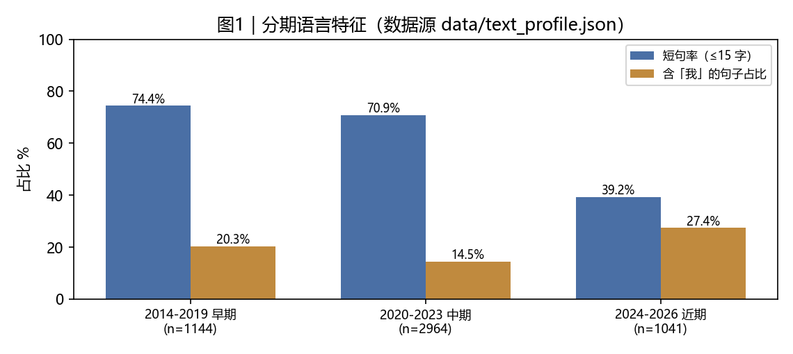
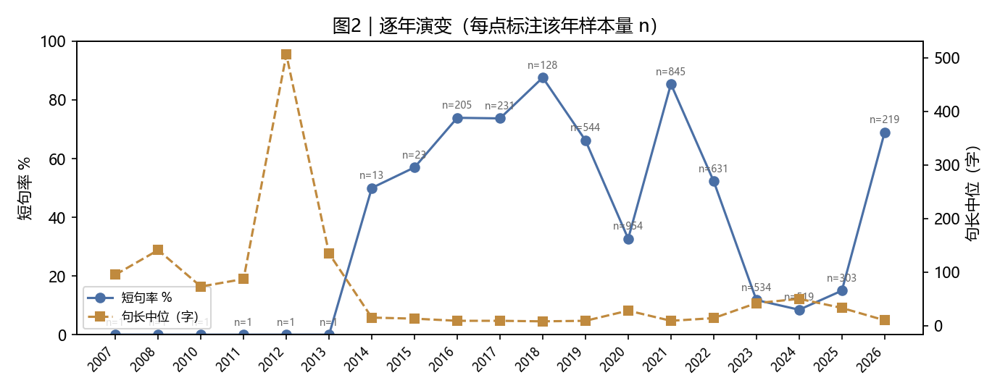
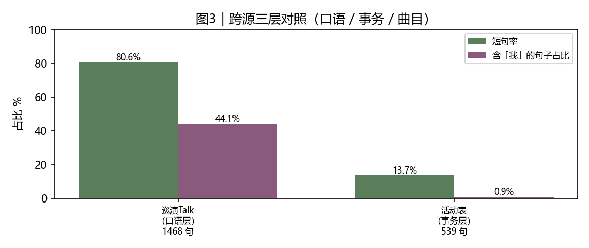

本站把「数据结论」直接做成可发布的东西：每条结论配一段传记体、一条小红书、一条微博、一份短视频脚本骨架，并逐条附上可核验的证据字段与禁忌。共 6 条结论，数字全部由脚本从站内数据现算。
平台机制相关表述一律为经验性认知（非官方）；本页不使用平台侧量级断言。文案中不出现评价词与感叹号。指数类数字均为追踪曲目池口径。
结论：录音室 72 首中 44 首（61.1%）的最低稳定音低于男低音下限 E2 82.4Hz；最低为 B1 61.5Hz《静止了的夜晚》。
他录过的作品里，最低的一个音停在 B1，出现在《静止了的夜晚》。低音声部把 C2 叫作 Low C，能唱到 Low C 已经是一道门槛。这样的曲子在他的录音室里不止一首：72 首当中，有 44 首的最低音落在男低音下限之下。
他的最低稳定音比 Low C 还低一个半音。 72 首录音室作品，44 首的最低音在 E2 之下。 最低的一首停在 B1 61.5 赫兹，《静止了的夜晚》。 小词：最低稳定音 / Low C / B1
录音室全量测下来，最低稳定音 B1 61.5 赫兹，出自《静止了的夜晚》。72 首里 44 首的最低音低于 E2。
【钩子句】他的最低稳定音比 Low C 还低一个半音。 【3 秒开头】他的最低稳定音比 Low C 还低一个半音。 【中段事实】录音室 72 首中 44 首（61.1%）的最低稳定音低于男低音下限 E2 82.4Hz；最低为 B1 61.5Hz《静止了的夜晚》。 【结尾 CTA】完整数据可在站内检索；平台机制为经验性认知（非官方） 【字幕要点】最低稳定音 / Low C / B1 【素材】发布者自备，本站不提供音视频
结论：保留榜最长单音 16.5 秒（D2，《我真的受伤了》），录音室最长 15.1 秒（《节气歌》）。
《我真的受伤了》里有一句没有换气，一个 D2 的音从起声到收尾是 16.5 秒，是他保留素材里最长的一条。录音室那边最长的一条是 15.1 秒，出自《节气歌》。
一句歌词，16.5 秒没有换气。 音高是 D2，出自《我真的受伤了》。 录音室最长的一条是 15.1 秒。 小词：长声 / 一口气 / D2
保留榜上最长的一条单音是 16.5 秒，D2，出自《我真的受伤了》。
【钩子句】一句歌词，16.5 秒没有换气。 【3 秒开头】一句歌词，16.5 秒没有换气。 【中段事实】保留榜最长单音 16.5 秒（D2，《我真的受伤了》），录音室最长 15.1 秒（《节气歌》）。 【结尾 CTA】完整数据可在站内检索；平台机制为经验性认知（非官方） 【字幕要点】长声 / 一口气 / D2 【素材】发布者自备，本站不提供音视频
结论：8 张专辑的颤音速率中位极差 0.27Hz（全量中位 5.12Hz）。
从最早一张到最近一张，中间隔了几年。把每张专辑里所有曲目的颤音速率各自取中位，再横向比一遍，最高与最低之间只差 0.27 赫兹。这些专辑的录制年份、编曲和人声处理都不一样。
8 张专辑，颤音速率只漂了 0.27 赫兹。 做法是把每张专辑的颤音速率取中位，再互相比。 这些专辑的年份和编曲都不同。 小词：颤音 / 稳定性 / 指纹
8 张专辑的颤音速率中位极差是 0.27 赫兹。
【钩子句】8 张专辑，颤音速率只漂了 0.27 赫兹。 【3 秒开头】8 张专辑，颤音速率只漂了 0.27 赫兹。 【中段事实】8 张专辑的颤音速率中位极差 0.27Hz（全量中位 5.12Hz）。 【结尾 CTA】完整数据可在站内检索；平台机制为经验性认知（非官方） 【字幕要点】颤音 / 稳定性 / 指纹 【素材】发布者自备，本站不提供音视频
结论：同窗口径下可比曲目 2 首：《敕勒歌》2.38→2.33 赫兹；《乌兰巴托的夜》2.2→2.33 赫兹。
同一个乐句隔一晚再唱会变成什么样，北京这两场给了一次对照：能对着同一把尺子比的歌只有 2 首，《敕勒歌》2.38→2.33 赫兹；《乌兰巴托的夜》2.2→2.33 赫兹。两张表上的数字差在第二位小数。
隔一晚再唱，颤音从 2.38 变 2.33 赫兹。 北京两场里，能对同一把尺子的歌只有 2 首。 两次读数差在第二位小数。 小词：跨夜 / 一致性 / 颤音
同一首歌隔一晚再唱，两场的颤音速率是 2.38 与 2.33 赫兹（可比曲目 2 首）。
【钩子句】隔一晚再唱，颤音从 2.38 变 2.33 赫兹。 【3 秒开头】隔一晚再唱，颤音从 2.38 变 2.33 赫兹。 【中段事实】同窗口径下可比曲目 2 首：《敕勒歌》2.38→2.33 赫兹；《乌兰巴托的夜》2.2→2.33 赫兹。 【结尾 CTA】完整数据可在站内检索；平台机制为经验性认知（非官方） 【字幕要点】跨夜 / 一致性 / 颤音 【素材】发布者自备，本站不提供音视频
结论：《贝加尔湖畔》低音区（<C3）占比 67.6%；全量 72 首里 44 首最低音低于 E2。
《贝加尔湖畔》全长四分钟，其中有超过一半的时间，他的声音停在同一个低音区，占比 67.6%。这在他录过的作品里不是孤例，72 首里 44 首的最低音落在 E2 之下。
四分钟的歌，他有两分多钟待在同一个低音区。 说的是《贝加尔湖畔》，占比 67.6%。 七十二首作品里，六成的最低音落在 E2 之下。 小词：低音区 / 占比 / 底盘
《贝加尔湖畔》里低音区占比 67.6%，比一半还多。
【钩子句】四分钟的歌，他有两分多钟待在同一个低音区。 【3 秒开头】四分钟的歌，他有两分多钟待在同一个低音区。 【中段事实】《贝加尔湖畔》低音区（<C3）占比 67.6%；全量 72 首里 44 首最低音低于 E2。 【结尾 CTA】完整数据可在站内检索；平台机制为经验性认知（非官方） 【字幕要点】低音区 / 占比 / 底盘 【素材】发布者自备，本站不提供音视频
结论：全量 5155 帖、25639 句：短句率 69.0%、问句率 1.1%、第一人称句占 17.8%；早期（n=1144）短句率 74.4% → 近期（n=1041）39.2%。
把 5155 条文本逐句切开，一共 25639 句，其中短句占 69.0%，每句话带上「我」的占 17.8%。分年看，早期的短句率是 74.4%，近期是 39.2%。
他写东西的样子：短句率 69.0%。 统计口径是 5155 条文本、25639 句。 第一人称句占 17.8%。 小词：短句 / 第一人称 / 语料
5155 条文本切出 25639 句，短句率 69.0%，第一人称句 17.8%。
【钩子句】他写东西的样子：短句率 69.0%。 【3 秒开头】他写东西的样子：短句率 69.0%。 【中段事实】全量 5155 帖、25639 句：短句率 69.0%、问句率 1.1%、第一人称句占 17.8%；早期（n=1144）短句率 74.4% → 近期（n=1041）39.2%。 【结尾 CTA】完整数据可在站内检索；平台机制为经验性认知（非官方） 【字幕要点】短句 / 第一人称 / 语料 【素材】发布者自备，本站不提供音视频
统计范围：全量文本语料 5155 条、切出 25639 句。总体短句率（≤15 字）69.0%、问句率 1.1%、含「我」的句子占 17.8%。
| 分期 | 样本（条） | 句子数 | 短句率 | 问句率 | 含「我」的句子 | 句长中位（字） |
|---|---|---|---|---|---|---|
| 2014-2019 早期 | 1144 | 8722 | 74.4% | 1.3% | 20.3% | 9.0 |
| 2020-2023 中期 | 2964 | 14408 | 70.9% | 0.9% | 14.5% | 10.0 |
| 2024-2026 近期 | 1041 | 2497 | 39.2% | 1.6% | 27.4% | 23 |
| 层 | 条/句 | 短句率 | 含「我」的句子 | 句长中位 | 容器（字段映射已确认） |
|---|---|---|---|---|---|
| 巡演Talk（口语层） | 1459 条 / 1468 句 | 80.6 | 44.1 | 10.0 | groups[].items[].sentences[] |
| 活动表（事务层） | 459 条 / 545 句 | 13.6 | 1.3 | 50 | rows[]（title＋city＋note） |
| 巡演长表（曲目层） | 64 条 / 0 句 | — | — | — | setlists（日期为键） |
曲目层（巡演长表）是曲名文本，不做句式统计，只用于曲目词表交叉；三层措辞天然不同，本页只作对照，不评优劣。



| 日期 | 巡次·城市 | 口语层（talk 原句） | 事务层（活动表标题） | 曲目层 |
|---|---|---|---|---|
| 2019-12-28 | 一巡·太原 | 「我今天去了好多可以吃面的地方」 | 王晰“Cherish珍晰”2019巡演太原站 | 36 首：让她降落、玛莲娜、花样年华、跟着你到天边、晚风暖暖、Your Man |
| 2019-12-21 | 一巡·厦门 | 「真的难搞眼,突破一下自己,很好,但是我觉得失败了」 | Cherish珍晰2019个人巡回音乐会厦门站 | 29 首：让她降落、玛莲娜、花样年华、跟着你到天边、晚风暖暖、Your Man |
| 2019-08-16 | 一巡·北京 | 「那接下来呢 我会邀请我的第二位嘉宾」 | Cherish珍晰巡回音乐会北京站 | 27 首：让她降落、玛莲娜、花样年华、跟着你到天边、晚风暖暖、Your Man |
| 2019-12-15 | 一巡·长沙 | 「其实在之前的许多年的一年尤其是在文工团的历练下其实我说实话其实并不应该紧张因为在」 | Cherish珍晰个人巡回音乐会长沙站 | 26 首：让她降落、玛莲娜、花样年华、跟着你到天边、晚风暖暖、Your Man |
| 2019-07-28 | 一巡·南京 | 「看一下你们写的这个问题要不要」 | （该层无记录） | 25 首：让她降落、玛莲娜、花样年华、跟着你到天边、晚风暖暖、Your Man |
| 2020-01-02 | 一巡·北京 | 「在2020年的元旦之后1月2号」 | 王晰“Cherish珍晰”2019巡演北京收官 | 25 首：让她降落、玛莲娜、花样年华、跟着你到天边、晚风暖暖、Your Man |
| 2021-03-07 | 二巡·上海 | 「嗯,其实有太久的老歌真的是非常非常的好听」 | 王晰2021个人巡回音乐会上海站 | 22 首：花儿为什么这样红、City of Stars、茕茕、匆匆、后会无期、别离的预感 |
| 2023-12-31 | 四巡·上海 | 「有很多朋友都是在神无人心上面所知道的我 了解的我」 | 踏上新征程2024 BRTV跨年之夜 | 21 首：恭喜发财、新年好、夜上海、南屏晚钟、夜来香、嘎达梅林+海然海然 |
| 2019-06-07 | 一巡·杭州 | 「如果说要是没有跟大家聊几句的话」 | （该层无记录） | 20 首：让她降落、玛莲娜、花样年华、跟着你到天边、晚风暖暖、Your Man |
| 2019-11-16 | 一巡·海口 | 「我说的是这一年唱的最多的一首歌」 | 王晰Cherish珍晰2019巡演海口站落幕 | 20 首：让她降落、玛莲娜、花样年华、跟着你到天边、晚风暖暖、Your Man |
| 2026-08-23 | 六巡·广州 | 「我觉得要再不见的话我就快匀了」 | 王晰个人巡回音乐会 | 20 首：生日快乐、花儿为什么这样红、橄榄树、像雾像雨又像风、Yesterday Once More、Close to You |
| 2019-06-15 | 一巡·武汉 | 「因为真的是非常用心地去准备每一首歌」 | （该层无记录） | 18 首：让她降落、玛莲娜、花样年华、跟着你到天边、晚风暖暖、Your Man |
原始候选 56 条，入选 32 条；丢弃：{"与已发重复": 3, "长度": 1, "池内重复": 20}。每条都有出处（文件与字段/时间戳），并已与已发词条去重。
| 钩子 | 来源 | 原句 | 出处 | 风险/禁忌 |
|---|---|---|---|---|
| 进院团才把这首歌唱成 | talk | None | 现场 talk 62:19（绝对 3739.3s）：对所以说非常的感谢东方 | ['talk 为本地 ASR 转写，未人工校对（引用须标注）'] |
| ≥10 秒的长音有 8 条 | acoustic | None | data/archive_long_notes.json#top[]（dur_s ≥ 10 计数）；最长 16.5s | ['极值音口径＝最低稳定音；触达音/待核读数不进数字位'] |
| 最低稳定音 B1 61.5Hz | acoustic | None | data/archive_vocal_albums.json#summary.lowest（song=静止了的夜晚, album=重游往昔） | ['极值音口径＝最低稳定音；触达音/待核读数不进数字位'] |
| 72 首里 44 首低于 E2 | acoustic | None | data/archive_vocal_albums.json#songs[].low_hz < 82.4（n=72） | ['极值音口径＝最低稳定音；触达音/待核读数不进数字位'] |
| 2020年，让我们继续携手同行 元旦快乐 | corpus | 王晰 因为有你 星光璀璨 365个日夜兼程，收获源源不断的幸福时光 2020年，让我们继续携手同行 元旦快乐 幸福安康 | （文本挖掘产物目录）） | [] |
| 2013年青歌赛结束后的那次经历 | corpus | 没有手机的日子虽然很安静，让我想起了 2013年青歌赛结束后的那次经历。 | （文本挖掘产物目录）） | [] |
| 2017年第一场与中国爱乐乐团合作的音乐会 | corpus | 2017年第一场与中国爱乐乐团合作的音乐会，非常顺 利，愉快 也辛苦我的小伙伴们一天的陪伴 … | （文本挖掘产物目录）） | [] |
| 想起来2019年1月6日最后一次录制，我对 | corpus | 想起来2019年1月6日最后一次录制，我对 100天前的自己说：人的成长来源于破碎，感谢你能勇 敢的打碎自己，重塑，再出 | （文本挖掘产物目录）） | [] |
| 「后来我发现原来我是同事」 | talk | None | 现场 talk 62:16（绝对 3736.4s）：后来我发现原来我是同事 | ['talk 为本地 ASR 转写，未人工校对（引用须标注）'] |
| 四巡北京站的第二场收官了，感恩一切 相信以后 | corpus | 四巡北京站的第二场收官了，感恩一切 相信以后，我们还会有很多很多的“小故事”等待着降临，爱你们❤️. | （文本挖掘产物目录）） | [] |
| 巡演第50场，感恩同行，爱让我们一直在路上❤️ | corpus | 五巡首场，『吾』晰启「杭」🎤 巡演第50场，感恩同行，爱让我们一直在路上❤️.王晰吾个人巡回音乐会 | （文本挖掘产物目录）） | [] |
| 我没变》《给电影人的情书》舞台直拍🎬 | corpus | 王晰 王晰五巡 北京站《十年》《我变了，我没变》《给电影人的情书》舞台直拍🎬 王晰吾个人巡回音乐会 | （文本挖掘产物目录）） | [] |
| 会有我就在你耳边说话的感觉 | corpus | 第一期我准备了由 为我独家 制作的3D读诗音频，挑选了王菲的经典作品《百年孤 寂》,戴上耳机听，会有我就在你耳边说话的感 | （文本挖掘产物目录）） | [] |
| 需要你们在台下观看60 | corpus | 追光吧肺话文学式官宣追光吧光影故事感大片 据调查，我在台上演唱1分钟，需要你们在台下观看60 秒。 | （文本挖掘产物目录）） | [] |
| 灯光就位，以声赴约，我们今晚见🎤 | corpus | 王晰 王晰吾个人巡回音乐会 灯光就位，以声赴约，我们今晚见🎤 王晰五巡 | （文本挖掘产物目录）） | [] |
| 灯光就位，以声赴约 | corpus | 王晰王晰吾个人巡回音乐会 灯光就位，以声赴约，我们今晚见🎤王晰五巡 | （文本挖掘产物目录）） | [] |
data/share/conclusion_copy.json（生成器 project_b/build_conclusion_copy.py）data/text_profile.json（生成器 project_b/build_language_profile.py）data/cross_source_wording.json（生成器 project_b/build_cross_wording.py）data/share/hook_candidates.json（生成器 project_b/build_hook_candidates.py）assets/insight/、data/share/insight_charts.json